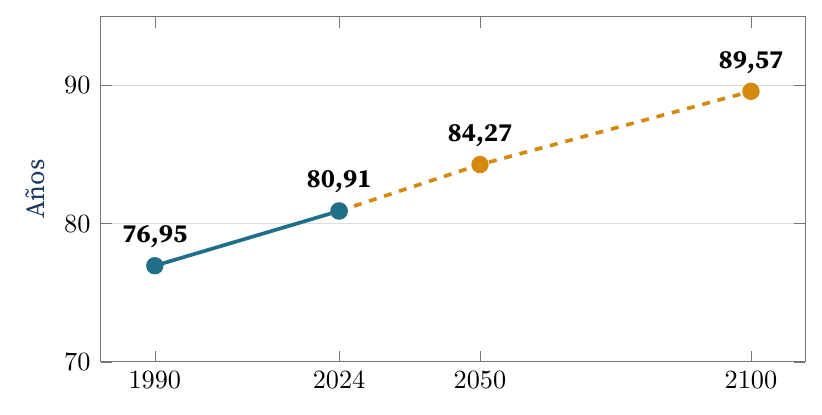
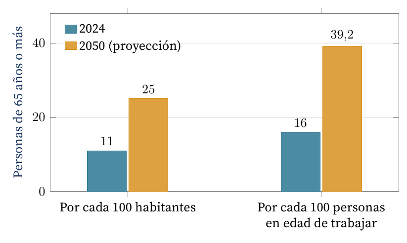
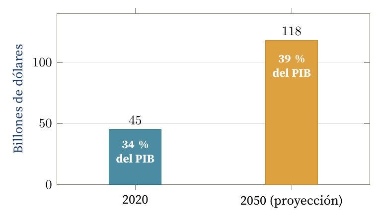

Envejecimiento, tecnología y el mercado que la industria todavía no mira
Carlos Luis Rojas Aragonés
Creo que no es un umbral objetivo, sino una variable que depende del contexto: la esperanza de vida, la distribución de edades de la población y hasta la ley de cada país. La OMS habla de personas de 60 años o más (Organización Mundial de la Salud, 2024), mientras que en Costa Rica la Ley Integral para la Persona Adulta Mayor fija el corte en 65 años (Asamblea Legislativa de la República de Costa Rica, 1999). Son convenciones, y las convenciones envejecen.
Los demógrafos Sanderson y Scherbov lo plantean de una forma que me parece muy útil: en lugar de contar los años vividos, contar los que quedan. Proponen considerar «vieja» a una persona cuando su esperanza de vida restante baja de unos 15 años (Sanderson y Scherbov, 2010). Con esa regla, la vejez no llega a la misma edad en todos los países ni en todas las épocas: se corre hacia adelante a medida que la medicina y la tecnología mejoran. En Costa Rica, la esperanza de vida al nacer pasó de 76,95 años en 1990 a 80,91 en 2024, y el INEC proyecta 84,27 en 2050 y 89,57 en 2100 (Ramírez, 2024) (Figura 1). Si eso se cumple, vamos a empezar a considerar jóvenes a muchas personas que hoy llamamos mayores.

Figura 1. Esperanza de vida al nacer en Costa Rica: valores estimados (línea continua) y proyectados (línea discontinua). Elaboración propia con datos del INEC citados por Ramírez (2024).
El cambio es global. La OMS estima que para 2030 una de cada seis personas en el mundo tendrá 60 años o más, y que ese grupo pasará de 1000 millones en 2020 a 2100 millones en 2050; los mayores de 80 se triplicarán hasta 426 millones (Organización Mundial de la Salud, 2024). Según la ONU, a mediados de la década de 2030 habrá más personas de 80 años o más que bebés, y a finales de la de 2070 los mayores de 65 superarán a los menores de 18 (Naciones Unidas, 2024).
Costa Rica va más rápido que el promedio. En 2024, 11 de cada 100 habitantes tenían 65 años o más; en 2050 serán 25. La relación entre mayores de 65 y personas en edad de trabajar subirá de 16,0 a 39,2 por cada 100, y la población total dejará de crecer en 2044 (Ramírez, 2024) (Figura 2).

Figura 2. Peso de la población de 65 años o más en Costa Rica. Elaboración propia con datos del INEC citados por Ramírez (2024).
En lo laboral, la lectura pesimista es que habrá menos personas cotizando por cada pensionado. Pero si la gente envejece mejor, también va a estar en mejores condiciones de seguir trabajando, emprendiendo o cambiando de campo mucho después de los 65. Por eso Sanderson y Scherbov sostienen que la edad de retiro no debería ser fija, sino moverse con la esperanza de vida (Sanderson y Scherbov, 2010).
En lo médico, vivir más significa convivir más años con enfermedades crónicas, y eso empuja la demanda de servicios de salud y de cuidados (Organización Mundial de la Salud, 2024). La medicina está avanzando bastante, y la presión demográfica es justamente uno de los motores de la telemedicina, el monitoreo remoto y los dispositivos que se usan en el cuerpo.
En lo tecnológico, el envejecimiento mueve dinero. AARP y Economist Impact estimaron que en 2020 las personas de 50 años o más, el 24 % de la población mundial, generaron el 34 % del PIB global (unos 45 billones de dólares), y proyectan que en 2050 llegarán al 39 % (118 billones) (AARP y Economist Impact, 2022) (Figura 3).

Figura 3. Aporte de las personas de 50 años o más al PIB mundial. Elaboración propia con datos de AARP y Economist Impact (2022).
Como vimos en uno de los videos del curso, se abre un mercado nuevo: el de las personas que ya se retiraron, o que están por hacerlo, y que pueden convertirse fácilmente en un público objetivo para empresas que tradicionalmente apuntaban a poblaciones cada vez más jóvenes. Joseph Coughlin, director del MIT AgeLab, lo llama la «economía de la longevidad» y advierte que las empresas ven el tamaño y la riqueza de ese mercado, pero lo atienden con una idea anticuada de lo que es ser mayor: productos que gritan «para viejos» y que nadie quiere usar (Coughlin, 2017).
Veo tres retos y tres oportunidades:
Para quienes trabajamos en tecnología hay además una lectura personal: nuestras propias carreras van a ser más largas, así que el aprendizaje continuo deja de ser opcional.
Les dejo una pregunta: en sus empresas, ¿las personas mayores de 60 aparecen en los perfiles de usuario y en las pruebas de producto, o siguen siendo un segmento invisible?
AARP y Economist Impact. (2022). The Global Longevity Economy Outlook: People age 50 and older are making an impact. AARP. https://www.aarp.org/pri/topics/work-finances-retirement/economics-aging/global-longevity-economy/
Asamblea Legislativa de la República de Costa Rica. (1999, 25 de octubre). Ley Integral para la Persona Adulta Mayor (Ley n.º 7935). https://www.pgrweb.go.cr/scij/
Coughlin, J. F. (2017). The Longevity Economy: Unlocking the World's Fastest-Growing, Most Misunderstood Market. PublicAffairs.
Faverio, M. (2022, 13 de enero). Share of those 65 and older who are tech users has grown in the past decade. Pew Research Center. https://www.pewresearch.org/short-reads/2022/01/13/share-of-those-65-and-older-who-are-tech-users-has-grown-in-the-past-decade/
Naciones Unidas. (2024). World Population Prospects 2024: Summary of results (UN DESA/POP/2024/TR/NO. 9). https://population.un.org/wpp/
Organización Mundial de la Salud. (2024). Ageing and health. https://www.who.int/news-room/fact-sheets/detail/ageing-and-health
Ramírez, A. (2024, 11 de julio). INEC estima que población de 65 años y más se duplicará para 2044. CRHoy. https://www.crhoy.com/economia/inec-estima-que-poblacion-de-65-anos-y-mas-se-duplicara-para-2044/
Sanderson, W. C. y Scherbov, S. (2010). Remeasuring aging. Science, 329(5997), 1287-1288. https://doi.org/10.1126/science.1193647